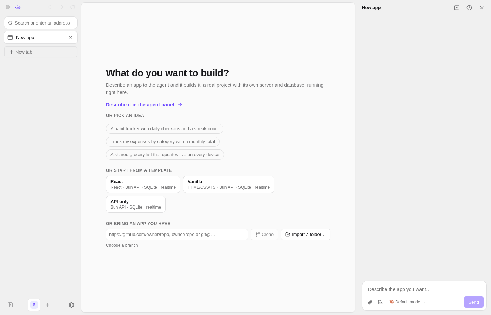
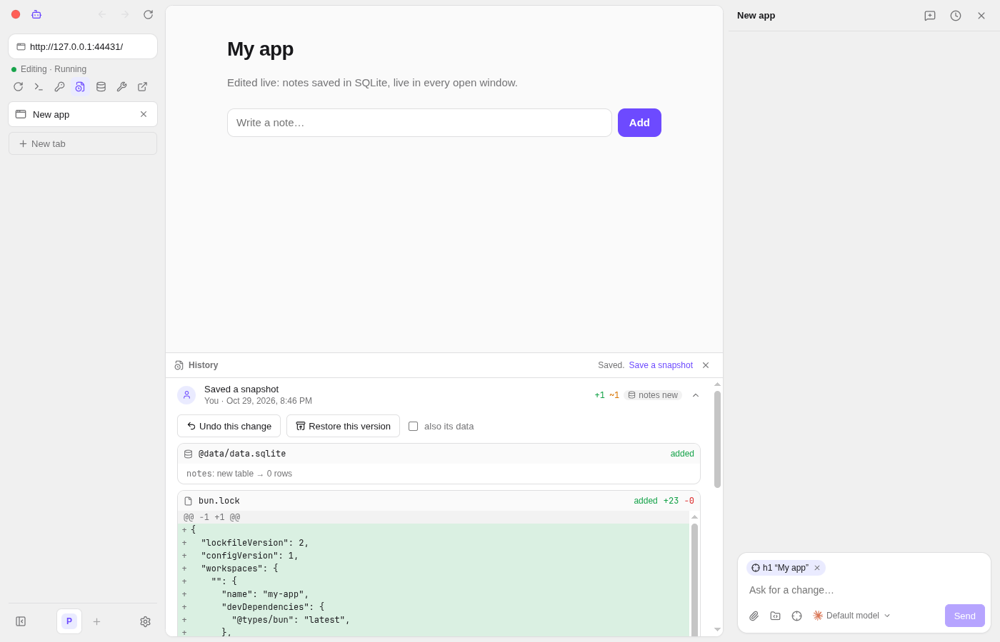
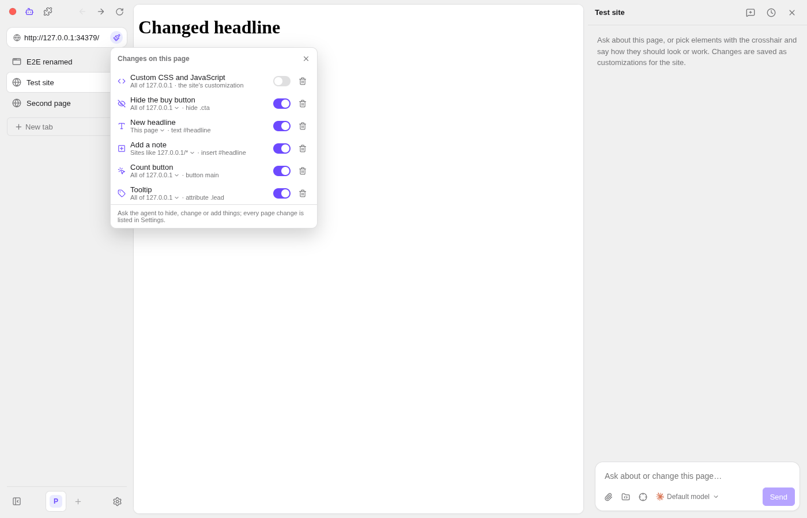

Describe an app. Your coding agent builds it, right in a browser tab.
Rune Browser is a desktop browser for your own small apps. Claude Code, Codex or OpenCode write them as real projects, run them in a sandbox and keep improving them while you talk. On the login you already have.
Download Rune Browser Read the source
Free and open source, for Linux, Windows and macOS.

What you can do with it
- Make an app from a sentence
- Ask for “a habit tracker with daily check-ins” and the agent writes a real project with its own server and database, runs it, and fixes what it sees in the preview. Keep changing it by talking, or close the chat and use it.
- Use the agents you already have
- Claude Code, Codex and OpenCode, signed in with your own subscription. There are no API keys to paste and no account to make here.
- Change the websites you use
- Point at anything on a page and ask: the agent hides it, restyles it or adds what's missing. Changes stay, per page or per site, each with its own switch.
- Browse like you're used to
- Workspaces with separate logins, split view, a command bar, bookmarks, history, Chrome extensions and the password manager you already use.
- Undo anything
- Every change an agent makes is saved as a snapshot with its diff, so you can step back to any earlier version of an app, data included.
- Share what you made
- Bundle page changes, a theme and extensions into a mod that someone else can install in one go.


Safe by default
Agents write code that runs on your computer, so Rune Browser keeps them on a short leash.
- Apps run in a sandbox and ask you before they reach anything outside it.
- Your secrets are handed to apps when they run, and never shown to an agent.
- Web pages are only read by an agent with no tools, so a page can't make it do anything.
- Everything agents and apps do is listed in Activity.
Install
Download the latest version from the releases page. Rune Browser keeps itself up to date from there.
| System | File | Before you start |
|---|---|---|
| Linux (x64) | .AppImage or .deb |
Install bubblewrap so apps run in a sandbox. The .deb asks for it. |
| Windows (x64) | -setup-x64.exe |
Not signed yet. On the SmartScreen warning, choose “More info”, then “Run anyway”. |
| macOS (Apple Silicon) | .dmg |
Not signed or tested yet. Right-click the app and choose Open the first time. |
Then sign in to an agent
-
Claude Code:
npm install -g @anthropic-ai/claude-code, then runclaudeand type/login -
Codex:
npm install -g @openai/codex, thencodex login - OpenCode: follow its install guide, then sign in
Rune Browser finds them on your PATH, or you can point to them in Settings.